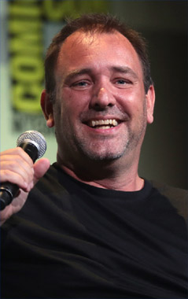

About Creators

Trey Parker
Randolph Severn "Trey" Parker III (born October 19, 1969) is an American actor, animator, writer, director, producer, singer, and songwriter. He is known for co-creating South Park (1997–present) along with his creative partner Matt Stone, as well as co-writing and co-directing the Tony Award-winning musical The Book of Mormon (2011). Parker was interested in film and music as a child, and attended the University of Colorado, Boulder following high school, where he met Stone. The two collaborated on various short films, and starred in a feature-length musical, titled Cannibal! The Musical (1993).
Parker and Stone moved to Los Angeles and wrote their second film, Orgazmo (1997). Before the premiere of the movie, South Park premiered on Comedy Central in August 1997. The duo, who possess full creative control of the show, have since produced music and video games based on the show, which continues to run. They worked on a feature film titled South Park: Bigger, Longer & Uncut (1999), which received critical acclaim by both critics and fans. Alongside Stone, he has also produced various feature films and television series, including Team America: World Police (2004). After several years of development, The Book of Mormon, a musical co-written by Parker, Stone, and composer Robert Lopez, premiered on Broadway and became immensely successful. In 2013, he and Stone established their own production studio, Important Studios.
Parker has been the recipient of various awards over the course of his career, including five Primetime Emmy Awards for his work on South Park, as well as four Tony Awards and a Grammy Award for The Book of Mormon.
Matt Stone
Matthew Richard "Matt" Stone (born May 26, 1971) is an American actor, animator, writer, director, producer, singer, and songwriter. He is known for co-creating South Park (1997–present) along with his creative partner Trey Parker, as well as co-writing the Tony Award-winning musical The Book of Mormon (2011). Stone was interested in film and music as a child, and attended the University of Colorado, Boulder following high school, where he met Parker. The two collaborated on various short films, and starred in a feature-length musical, titled Cannibal! The Musical (1993).
Stone and Parker moved to Los Angeles and wrote their second film, Orgazmo (1997). Before the premiere of the movie, South Park premiered on Comedy Central in August 1997. The duo, who possess full creative control of the show, have since produced music and video games based on the show, which continues to run. They worked on a feature film titled South Park: Bigger, Longer & Uncut (1999), which received critical acclaim by both critics and fans. Alongside Parker, he has also produced various feature films and television series, including Team America: World Police (2004). After several years of development, The Book of Mormon, a musical co-written by Stone, Parker, and composer Robert Lopez, premiered on Broadway and became immensely successful. In 2013, he and Parker established their own production studio, Important Studios.
Stone has been the recipient of various awards over the course of his career, including five Primetime Emmy Awards for his work on South Park, as well as four Tony Awards and a Grammy Award for The Book of Mormon.